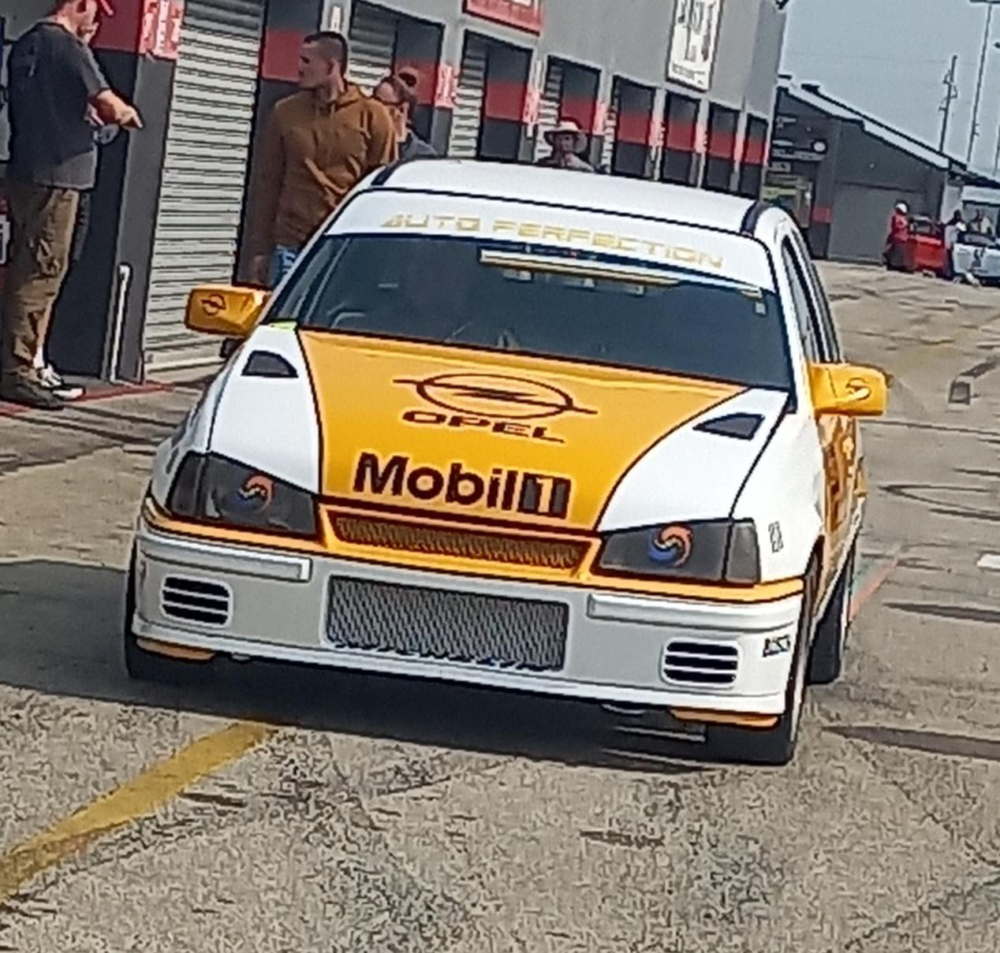
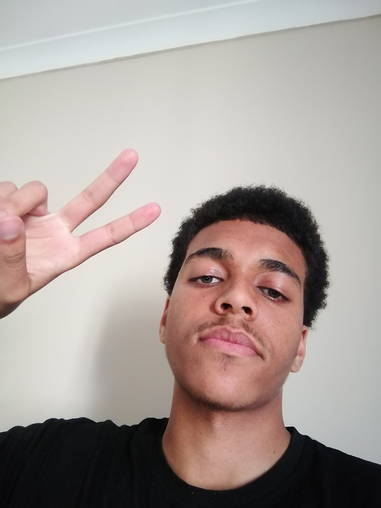

Meet the Software Team
Schalk
My name is Schalk and I am the world's greatest badass. I love to go to the strip clubs and party hard.

Ewan
My name is Ewan. I discovered my love for coding in high school, embracing its endless potential. Surfing is my escape, a way to refresh my mind.

Jarren
My name is Jarren. I'm a developer, always evolving with technology's pace. Fantasy novels are my escape from reality.
Jay-Jay
My name is Jay-Jay. Software development fascinates me because of the collaborative aspect and learning from different people. When I am not coding, you can find me in front of my PC gaming.

Jason
My name is Jason. The software engineering bug bit me when I realized that the only limit is my imagination. My favorite hobby is gardening because it allows me to see things grow!

Malachi
My name is Malachi. The similarities between puzzle-building and coding are endless, but my favorite part of both is definitely attention to detail and problem-solving.
Maghmood
My name is Maghmood. Coding is fun because it allows me to hone my skills and become a better programmer. I am a board game fanatic, especially The Settlers of Catan.
Simamkele
My name is Simamkele. I enjoy working with people as well as working on my own, and that is why I enjoy coding. Cycling is my favorite form of exercise.

Delandrio
Meet Delandrio, loves football that transcends the boundaries of mere fandom. When not cheering for their favorite team.